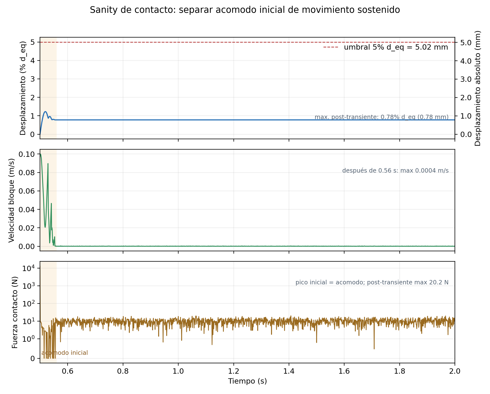
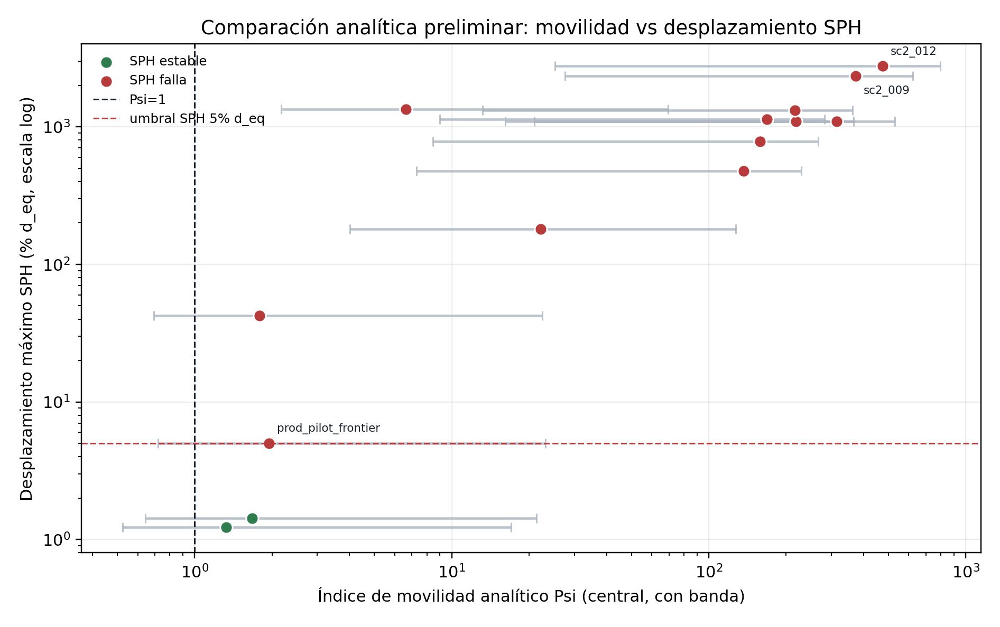

Post-convergencia: frontera, variables locales e incertidumbre de resolucion
Estado actualizado con AL8 y los checks finos dp=0.002 completos. La lectura central es clara: cerca del umbral, dp=0.003 entrega fallas marginales conservadoras frente a dp=0.002.
Estado ejecutivo
- Casos oficiales
- 93 campana productiva hasta AL8
- Estables / Fallos
- 54 / 39 criterio Dmax > 5% d_eq
- AL8
- 8/8 OK 5 ESTABLE, 3 FALLO
- dp=0.002
- 6/6 OK 6 ESTABLE, 0 FALLO
- Cambios de clase
- 4/6 FALLO en dp=0.003 -> ESTABLE en dp=0.002
- GP local LOO
- 0.861 variables M, mu, m*
Resultado defendible hoy
AL8 cerro dos brackets en H=0.210. Luego, los 6 checks dp=0.002 quedaron ESTABLES. El caso fino mas cercano al umbral fue H=0.225, m*=1.00, mu=0.8640: Dmax=4.32% d_eq.
Como contarlo sin sobreprometer
4 de 6 pares cambiaron de clase respecto de dp=0.003. Eso se presenta como banda de incertidumbre de resolucion cerca del umbral, no como anulacion de todo el active learning previo.
Figuras principales


Verificaciones restauradas
Estas figuras mantienen el argumento de defensibilidad: solver hidraulico, contacto casi sin forzante y coherencia de fuerza motriz sobre resistencia.



Frase defendible: el modelo no queda validado experimentalmente para este bloque especifico, pero si queda verificado por resolucion, contrastado con benchmark hidraulico, revisado por contacto y comparado con balance analitico.
Variables clave
H_damAltura inicial de la columna dam-break. Sirve para generar el flujo, pero no es la variable final mas transferible.h_localProfundidad local medida en gauges antes del bloque, en la condicion sin bloque.u_xVelocidad longitudinal local del flujo, positiva hacia la playa y el bloque.M = rho max(h u_x^2)Solicitacion local tipo flujo de momentum por ancho. Es la mejor variable local preliminar porque combina profundidad y velocidad en el mismo instante de exigencia.muCoeficiente de friccion bloque-playa usado para barrer estabilidad.m*Masa relativa: 1.00 es el bloque base, 0.85 mas liviano y 1.25 mas pesado.Resumen por lote
| Lote | Casos oficiales | Estables | Fallos | Dmax mediano |
|---|---|---|---|---|
| Piloto | 5 | 2 | 3 | 5.02% |
| Batch 2 | 8 | 5 | 3 | 3.05% |
| Batch 3 | 10 | 4 | 6 | 7.31% |
| Batch 4 masa | 11 | 6 | 5 | 4.28% |
| AL1 | 8 | 7 | 1 | 1.25% |
| AL2 | 10 | 5 | 5 | 4.75% |
| AL3 | 8 | 8 | 0 | 3.17% |
| AL4 | 8 | 5 | 3 | 4.22% |
| AL5 | 8 | 4 | 4 | 4.47% |
| AL6 | 7 | 3 | 4 | 5.08% |
| AL7 local | 2 | 0 | 2 | 19.83% |
| AL8 | 8 | 5 | 3 | 3.07% |
La tabla resume los lotes oficiales usados en las figuras.